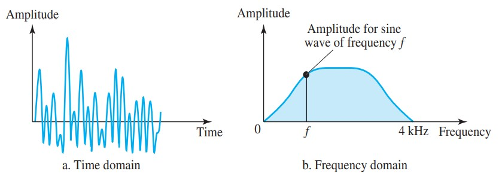
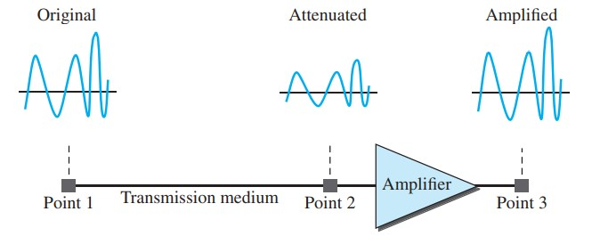

Chapter 3_Introduction to Physical Layer
3.1 Data and Signals
僅顯示了主機到路由器、路由器到路由器和路由器到主機，但交換機也參與物理通信。
雖然主機和主機需要交換數據，但物理層的通信意味著交換信號。
數據需要傳輸和接收，媒體必須將數據更改為信號。
數據和表示它們的信號可以是類比的，也可以是數位形式。
Analog and Digital Data
類比數據是指連續的資訊;數字數據是指具有離散狀態的資訊。
- Analog Data(類比數據):
(例如人聲發出的聲音)具有連續的值。當有人說話時，在空中會產生類比波。這可以通過麥克風捕獲並轉換為類比信號，或者採樣並轉換為數字信號。 - Digital Data(數位數據):
採用離散值。例如，數據以 0 和 1 的形式儲存在計算機記憶體中。它們可以轉換為數位信號或調製成類比信號，以便在介質上傳輸。
Analog and Digital Signals
顯示信號的最簡單方法是將它們繪製在一對垂直軸上。垂直軸表示信號的值或強度。水平軸表示時間。
- Analog Signals(類比信號):
在一段時間內具有無限多個強度級別。當波從值 A 放在值 B 時，它會通過並沿其路徑包含無限數量的值。 - Digital Signals(數位信號):
只能具有有限數量的已定義值。儘管每個值可以是任何數位，但它通常像 1 和 0 一樣簡單。

Periodic and Nonperiodic
- Periodic Signals(週期性信號):
在可測量的時間範圍內完成一個模式，並在隨後的相同週期內重複該模式。一個完整模式的完成稱為迴圈。 - Nonperiodic Signals(非週期性信號):
在不表現出隨時間重複的模式或周期的情況下發生變化。
在數據通信中，我們通常使用週期性類比信號和非週期性數位信號。
In data communications, we commonly use periodic analog signals and nonperiodic digital signals.
3.2 Periodic Analog Signals
週期性類比信號可分為簡單信號或複合信號。
簡單的週期性類比信號，即正弦波，不能分解成更簡單的信號。
複合週期類比信號由多個正弦波組成。
Sine Wave
正弦波(sine wave)是週期性類比信號的最基本形式。
將其可看成為一條簡單的振蕩曲線時，它在迴圈過程中的變化是平滑而一致的，是一種連續的滾動流動。
正弦波可以用三個參數表示：峰值幅度(peak amplitude)、頻率(frequency)和相位(phase)。
這三個參數完全描述了正弦波。
一個正弦波，每個迴圈由時間軸上方的單個弧線組成，然後是其下方的單個弧。
- Peak Amplitude(峰值幅度):
信號的峰值幅度是其最高強度的絕對值，與其攜帶的能量成正比。
對於電信號，峰值幅度通常以伏特為單位進行測量。 - Period and Frequency(週期和頻率):
週期和頻率只是以兩種方式定義的一個特徵。
週期是頻率的倒數，頻率是週期的倒數。
Frequency and period are the inverse of each other.
[ f = 1/T and T = 1/f ]
- Period(週期):
指以秒為單位，一個信號需要完成1個周期的時間量。
句點以秒為單位正式表示。 - Frequency(頻率):
是指以1秒為單位的週期數。
頻率正式以赫茲(Hz)表示，即每秒週期數。
-
頻率是相對於時間的變化率。短時間內的變化意味著高頻率。長時間的變化意味著低頻率。
如果信號的值在很短的時間內發生變化，則其頻率很高。
如果它在很長一段時間內發生變化，則其頻率較低。 -
如果一個信號根本沒有變化，它永遠不會完成一個週期，所以它的頻率是0 Hz.
信號瞬間變化時，其週期為零;由於頻率是週期的倒數，故頻率是1/0，或無限(無界)
如果信號根本沒有變化，則其頻率為零。如果信號暫態變化，則其頻率是無限的。
Two signals with the same amplitude and phase, but different frequencies.

- Period(週期):
- Phase(相位):
相位描述波形相對於時間0的位置。
360º的相移對應於完整週期的偏移;180°的相移對應於一個週期的一半的偏移;90º的相移對應於四分之一週期的偏移。 -
Wavelength(波長):
波長是信號通過傳輸介質傳播的另一個特徵。
波長(Wavelength)將簡單正弦波的週期或頻率與介質的傳播速度(propagation speed)結合在一起。
雖然信號的頻率與介質無關，但波長取決於頻率和介質。
波長是任何類型信號的屬性。
在數據通信中，我們經常使用波長來描述光在光纖中的傳輸。
波長是簡單信號在一個週期內可以傳播的距離。
[ Wavelength = (propagation speed) * period = propagation speed/frequency ]
[ λ = c/f ]

Two signals with the same phase and frequency, but different amplitudes.
Three sine waves with the same amplitude and frequency, but different phases.
Time and Frequency Domains
- time-domain plot(時域圖):
顯示信號幅度(amplitude)相對於時間的變化（它是幅度與時間的關係圖）。
相位未在時域圖上顯式顯示。 - frequency-domain plot(頻域圖):
顯示振幅(amplitude)和頻率之間的關係。
頻域圖僅涉及峰值和頻率。未顯示一個週期內的振幅變化。
A complete sine wave in the time domain can be represented by one single spike in the frequency domain.
當我們處理多個正弦波時，頻域更緊湊，更有用。
Composite Signals
-
我們需要發送一個複合信號來傳達數據。
複合信號由許多簡單的正弦波組成。
單頻正弦波在數據通信中沒有用處;我們需要發送一個複合信號，一個由許多簡單的正弦波組成的信號。
如果我們只有一個正弦波通過電話傳達對話，那將毫無意義，也不會攜帶任何資訊。
-
任何復合信號都是具有不同頻率、振幅和相位的簡單正弦波的組合。
-
複合信號可以是週期性的，也可以是非週期性的。
- 週期性:
如果複合信號是週期性的，則分解給出一系列具有離散頻率的信號。
週期性複合信號可以分解為一系列具有離散頻率的簡單正弦波。 - 非週期性:
如果複合信號是非週期性的，則分解得到具有連續頻率的正弦波的組合。
非週期性複合信號可以分解為無限數量的簡單正弦波的組合，這些正弦波具有連續的頻率。
正弦波與頻率f的頻率與複合信號的頻率相同;它被稱為基頻(fundamental frequency)，或一次諧波(harmonic)。頻率為3f的正弦波的頻率為基頻的3倍;它被稱為三次諧波。
週期性複合信號的頻域總是由離散尖峰組成。

在這種複合信號的時域表示中，存在無限數量的簡單正弦頻率。
雖然人聲中的頻率數量是無限的，但範圍是有限的。
正常人可以創建0到4 kHz之間的連續頻率範圍。
信號的頻率分解會產生連續曲線。
在 0.0 和 4000.0（實際值）之間有無限多個頻率。
為了找到與頻率 f 相關的振幅，我們在 f 處繪製一條垂直線以與包絡曲線相交。
垂直線的高度是相應頻率的振幅。
- 週期性:
Bandwidth
複合信號中包含的頻率範圍是其頻寬(Bandwidth)。
帶寬通常是兩個數位之間的差值，是該信號中包含的最高頻率和最低頻率之間的差異。
[ B = fh - fl ]
3.3 Digital Signals
除了由類比信號表示外，資訊還可以由數位信號表示。
1 可以編碼為正電壓，0 可以編碼為零電壓。
一個數位信號可以有兩個以上的電平(signal levels / levels)。
在這種情況下，我們可以為每個級別發送超過1 bit。
//顯示了兩個信號，一個信號有兩個電平(signal levels)，另一個有四個電平。
In general, if a signal has L levels, each level needs log2 L bits.
如果信號具有 L 電平，則每個電平都需要 log2 L 位。
[ Number of bits per level = log28 = 3 ]
Bit Rate
大多數數位信號是非週期性的，因此週期和頻率不是合適的特性。
bit rate (而不是頻率)-用於描述數字信號。
bit rate 是以 1s 為單位發送的位數，以每秒位數 bits per second(bps) 表示。
Bit Length
我們討論了類比信號波長的概念:一個週期在傳輸介質上佔用的距離。
我們可以為數位信號定義類似的東西:bit length(位長度)。bit length是一位在傳輸介質上佔用的距離。
[ Bit length = propagation speed (傳播速度) × bit duration ( bit 持續的時間) ]
Digital Signal as a Composite Analog Signal
數位信號是複合模擬信號。
頻寬是無限的。
數字信號，在時域中，包括連接的垂直和水平線段。
時域中的垂直線表示無窮大的頻率(時間內的突然變化);時域中的水平線表示頻率為零(時間內不變)。
從零頻率到無窮大頻率(反之亦然)意味著介於兩者之間的所有頻率都是域的一部分。
傅里葉分析可用於分解數字信號。
- 如果數位信號是週期性的，這在數據通信中很少見，則分解的信號具有具有無限頻寬和離散頻率的頻域表示。
- 如果數位信號是非週期性的，則分解的信號仍然具有無限頻寬，但頻率是連續的。
//兩個頻寬都是無限的，但週期信號具有離散頻率，而非週期性信號具有連續頻率。
Transmission of Digital Signals
A digital signal is a composite analog signal with an infinite bandwidth.
數位信號是具有無限頻寬的複合類比信號。
-
Baseband Transmission(基頻傳輸):
是指在不將數位信號更改為類比信號的情況下，通過通道發送數字信號。
直接控制信號狀態來進行傳輸。
基頻傳輸要求我們有一個低通通道，一個頻寬從零開始的通道。
如果我們有一個專用介質，其頻寬僅構成一個通道，則會出現這種情況。
具有無限頻寬的低通通道是理想的，但在現實生活中我們不可能有這樣的通道。
//兩個低通通道：一個具有窄頻寬，另一個具有寬頻寬。
-
Low-Pass Channel with Wide Bandwidth:
如果我們想保持非週期性數位信號的確切形式，垂直段垂直和水平段水平，我們需要發送整個頻譜，在零和無窮大之間的連續頻率範圍。
如果我們有一個專用介質，在發送方和接收方之間具有無限頻寬，可以保留複合信號的每個分量的確切振幅，這是可能的。
雖然這在計算機內部是可能的（例如，在 CPU 和內存之間），但在兩個設備之間是不可能的。
幸運的是，帶寬邊界處的頻率幅度非常小，可以忽略不計。
這意味著，如果我們有一種介質，例如同軸電纜或光纖電纜，具有非常寬的帶寬，兩個站點可以使用非常準確的數字信號進行通信。
-
Low-Pass Channel with Limited Bandwidth:
在帶寬有限的低通通道中，我們用類比信號來近似數字信號。 近似程度取決於可用帶寬。
-
Rough Approximation(粗略近似):
這種粗略的近似被稱為使用一次諧波 (N/2) 頻率
[ Bandwidhth = n/2 - 0 = n/2 ]
//在最壞情況下使用一次諧波粗略近似數字信號。
-
Better Approximation(更好的逼近):
為了使模擬信號的形狀看起來更像數字信號，我們需要添加更多的頻率諧波。
我們需要增加帶寬。
我們需要記住所需的帶寬與比特率成正比。
//模擬具有前三個諧波的數字信號。
在基帶傳輸中，所需的帶寬與bits rate成正比； 如果我們需要更快地發送bit，我們需要更多的帶寬。
-
Rough Approximation(粗略近似):
-
Broadband Transmission (Using Modulation)(寬頻傳輸):
寬帶傳輸或調製意味著將數字信號變為模擬信號進行傳輸。
利用多通道載波(carrier)將資料加入載波中進行傳出，當資料傳輸到目的地之後，再將資料從載波訊號中分離出來。
我們使用了單頻類比信號(稱為載波)；載波的幅度已更改為看起來像數字信號。 調製允許我們使用帶通通道(帶寬不是從零開始的通道)。
這種類型的通道比低通通道更可用。
如果可用通道是帶通通道(Bandpass channel)，我們不能將數字信號直接發送到通道；我們需要在傳輸之前將數字信號轉換為類比信號。
//f1 接近於零，而 f2 非常高。
雖然輸出信號不是原始信號的精確複製品，但數據仍然可以從接收的信號中推導出來。請注意，儘管某些頻率被介質阻擋，但它們並不重要。
只有當我們有一個具有無限或非常寬頻寬的低通通道時，才有可能實現保持數位信號形狀的數位信號的基頻傳輸。
3.4 Transmission Impairment
信號通過不完美的傳輸介質傳播。不完美會導致信號損傷。
這意味著介質開始處的信號與介質結束處的信號不同。發送的不是接收的。
損害的三個原因是衰減(attenuation)、失真(distortion) 和噪聲(noise)。
-
Attenuation(衰減):
衰減意味著能量的損失。當一個信號，無論是簡單的還是複合的，通過介質傳播時，它都會在克服介質的阻力時失去一些能量。
這就是為什麼傳輸電信號的電線在一段時間後會變熱。信號中的一些電能轉化為熱能。
為了補償這種損失，用放大器(amplifier)來放大信號。

Decibel(分貝dB):
為了表明信號強度減弱或增強，工程師使用分貝單位。
分貝 (dB) 測量兩個信號或一個信號在兩個不同點的相對強度。
如果信號被衰減，則分貝為負，如果信號被放大，則分貝為正。
[ dB = 10 log10 (P2/P1) ] //功率
[ dB = 20 log10 (V2/V1) ] //電壓(功率與電壓的平方成正比)
the attenuation (loss of power) - 衰減（功率損失）/the amplification (gain of power) - 放大（功率增益） -
Distortion(失真):
失真意味著信號改變其形式或形狀。
失真可能發生在由不同頻率組成的複合信號中。
每個信號分量都有自己通過介質的傳播速度，因此在到達最終目的地時也有自己的延遲。
如果延遲與週期持續時間不完全相同，則延遲差異可能會產生相位差異。
換句話說，接收器處的信號分量與發送器處的信號分量具有不同的相位。
因此復合信號的形狀不同。
-
Noise(噪聲):
以下為幾種類型的噪聲，例如熱噪聲、感應噪聲、串擾和脈衝噪聲，可能會破壞信號。
- 熱噪聲是電線中電子的隨機運動，它會產生一個原本不是由發射器發送的額外信號。
- 感應噪聲來自電機和電器等來源。 這些設備充當發送天線，傳輸介質充當接收天線。
- 串擾是一根電線對另一根電線的影響，一根導線用作發送天線，另一根導線用作接收天線。
- 脈衝噪聲是來自電源線、閃電等的尖峰信號（在很短的時間內具有高能量的信號）。
Signal-to-Noise Ratio(SNR) (信噪比):
信噪比定義為我們需要考慮平均信號功率和平均噪聲功率，因為它們可能會隨時間變化。
[ SNR = average signal power / average noise power ]
SNR 實際上是想要的（信號）與不想要的（噪聲）的比率。
高 SNR 意味著信號較少受到噪聲的破壞；低 SNR 意味著信號更容易被噪聲破壞。
因為 SNR 是兩個功率的比值，所以通常以分貝為單位來描述，SNRdB。
[ SNRdB = 10 log10 SNR ]
[ SNR = 10SNRdB/10 ]
[ SNR = (signal power) / 0 -> ∞ SNRdB = 10 log10 ∞ = ∞ ]
//基本上不可能沒有噪聲。
3.5 Data Rate Limits
數據通信中一個非常重要的考慮因素是我們可以通過通道以多快的速度發送數據(以bits per second為單位)。
數據速率取決於三個因素：
1. 可用帶寬
2. 我們使用的信號電平
3. 頻道的質量（噪音水平）
-
Noiseless Channel: Nyquist Bit Rate
定義了理論上的最大比特率。
在這個公式中，帶寬是信道的帶寬，L 是用於表示數據的信號電平數，而bit rate是以bits per second為單位的bit rate。
[ BitRate = 2 × bandwidth × log2L ]
增加信號電平可能會降低系統的可靠性。
-
Noisy Channel: Shannon Capacity
用於確定噪聲信道的理論最高數據速率。
在這個公式中，帶寬是信道的帶寬，SNR 是信噪比，容量是信道的容量，以bits per second為單位。
[ Capacity = bandwidth × log2(1 + SNR) ]
公式定義了通道的特性，而不是傳輸方法。
考慮一個噪聲極大的通道，其中信噪比的值幾乎為零。
換句話說，噪聲太強以至於信號微弱。
對於該通道，容量 C 計算為 這意味著該通道的容量為零，與帶寬無關。
換句話說，我們無法通過該通道接收任何數據。
[ C = B log2 (1 + SNR) = B log2 (1 + 0) = B log21 = B × 0 = 0 ] -
Using Both Limits:
在實踐中，我們需要使用這兩種方法來找到限制和信號電平。
EX: We have a channel with a 1-MHz bandwidth. The SNR for this channel is 63. What are the appropriate bit rate and signal level?
首先，我們使用Shannon Capacity找到bit rate上限。
[ C = B log2 (1 + SNR) = 106 log2 (1 + 63) = 106 log264 = 6 Mbps ]
Shannon Capacity為我們提供了 6 Mbps 的上限。
為了獲得更好的性能，我們選擇較低的值，例如 4 Mbps。
然後我們使用Nyquist Bit Rate求信號電平。
[ 4 Mbps = 2 × 1 MHz × log2L -> L = 4 ]
Shannon Capacity給了我們上限；Nyquist Bit Rate告訴我們需要多少信號電平。
3.6 Performance
One important issue in networking is the performance(性能) of the network—how good is it?
Bandwidth
衡量網絡性能的一個特徵是帶寬。具有兩個不同測量值：以Hz為單位的帶寬和以bits per seconds為單位的帶寬。
-
Bandwidth in Hertz:
以赫茲為單位的帶寬是複合信號中包含的頻率範圍或通道可以通過的頻率範圍。
bandwidth in hertz, refers to the range of frequencies in a composite signal or the range of frequencies that a channel can pass. -
Bandwidth in Bits per Seconds:
帶寬一詞也可以指通道、鏈路甚至網絡每秒可以傳輸的bits數。
bandwidth in bits per second, refers to the speed of bit transmission in a channel or link. -
Relationship:
基本上，以赫茲為單位的帶寬增加意味著以每秒比特數為單位的帶寬增加。
這種關係取決於我們是基帶傳輸還是調製傳輸。
Throughput
Throughput是衡量我們通過網絡實際發送數據的速度。
儘管乍一看，bits per seconds的帶寬和Throughput似乎相同，但它們是不同的。
一條鏈路可能有B bps的帶寬，但我們只能通過這條鏈路發送T bps，而T總是小於B
換句話說，帶寬是一條鏈路的潛在度量；
Throughput是我們發送數據速度的實際衡量標準。
例如，我們可能有一個帶寬為 1 Mbps 的鏈路，但連接到鏈路末端的設備可能只能處理 200 kbps。
這意味著我們不能通過此鏈接發送超過 200 kbps 的數據。
Latency (Delay)
延遲或延遲定義了從源發送第一個bit到整個消息完全到達目的地所需的時間。
我們可以說延遲由四個部分組成：傳播時間、傳輸時間、排隊時間和處理延遲。
[ Latency = propagation time + transmission time + queuing time + processing delay ]
-
Propagation Time:
傳播時間測量bit從源到目的地所需的時間。
通過將距離除以傳播速度來計算傳播時間。
[ Propagation time = Distance / (Propagation Speed) ] -
Transmission Time:
在數據通信中，我們不只發送 1 位，而是發送一條消息。
第一個bit更早離開，更早到達；最後一點稍後離開並稍後到達。
消息的傳輸時間取決於消息的大小和通道的帶寬。
[ Transmission time = (Message size) / Bandwidth ] - 消息短且帶寬高，因此主要控制因素是傳播時間，而不是傳輸時間。
transmission time(傳輸時間)可以忽略。 - 消息很長，帶寬也不是很高，所以占主導地位的因素是傳輸時間，而不是傳播時間。
propagation Time(傳播時間)可以忽略。 -
Queuing Time:
延遲的第三個組成部分是排隊時間，即每個中間設備或終端設備在處理消息之前保存消息所需的時間。
排隊時間不是一個固定因素；它隨著施加在網絡上的負載而變化。
當網絡上的流量很大時，排隊時間會增加。
中間設備，例如路由器，將到達的消息排隊並一一處理。
如果有很多消息，則每條消息都必須等待。
Bandwidth-Delay Product
帶寬和延遲是鏈路的兩個性能指標。
在數據通信中非常重要的是兩者的乘積，即帶寬延遲乘積，帶寬和延遲的乘積就是可以填滿鏈路的bit數。
可以說這個乘積 a × b 是可以填滿鏈路的最大bit數。 鏈路上任何時候都不能超過 a × b 位。
發送方應發送（2 × 帶寬 × 延遲）位的數據突發。
然後，發送方等待接收方對部分突發的確認，然後再發送另一個突發。
Jitter
另一個與延遲相關的性能問題是抖動。
如果不同的數據包遇到不同的延遲，並且在接收端使用數據的應用程序是時間敏感的（例如音頻和視頻數據）。
如果第一個數據包的延遲是 20 毫秒，第二個是 45 毫秒，第三個是 40 毫秒，那麼使用這些數據包的實時應用程序會承受抖動。